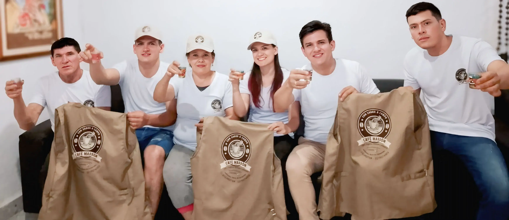

Finca El Cacique Cínera · desde 2024
Con sabor
a campo
Café artesanal, orgánico y recogido a mano en Arboledas. Empacado, molido, en grano o suelto, con domicilio y envíos por Interrapidísimo.

100% orgánico saludable y artesanal
Elige cómo llevarlo
Cosechado, procesado, secado, tostado y molido en la finca. Cada presentación guarda el mismo café.

01
Café artesanal
Del trabajo en la finca sale un café que invita a volver, en cualquiera de sus presentaciones.
02
Empacado
Aroma de tueste reciente, listo para abrir y acompañar la mañana.

03
Molido
Frescura lista para preparar, con aroma intenso en cada taza.

04
En grano
Para molerlo en casa y decidir el aroma de cada preparación.

05
Suelto
En la Av. 6 #1-23, sector Hospital, Arboledas. Llevas la cantidad que necesites.

Nosotros
El café de la finca, sin sede y con cercanía
Cristian Acevedo fundó Café Marrón en 2024 para servir café de agricultores artesanos de la finca El Cacique Cínera. Es 100% orgánico, saludable y de preparación cotidiana: la rutina, una salida o un rato a solas.
Todavía no hay una sede oficial. La atención sale desde Arboledas, en la casa de un familiar, con el mismo cuidado en cada entrega.
Nuestro compromiso
Cuando eliges Café Marrón te llevas el sabor de la finca Cínera en cada grano. Si algo no queda bien, escríbenos: la experiencia tiene que sentirse cercana.
Tienda
Horario de atención
- Lunes 7:00 a. m. – 8:00 p. m.
- Martes 7:00 a. m. – 8:00 p. m.
- Miércoles 7:00 a. m. – 8:00 p. m.
- Jueves 7:00 a. m. – 8:00 p. m.
- Viernes 7:00 a. m. – 8:00 p. m.
- Sábado 9:00 a. m. – 5:00 p. m.
- Domingo 9:00 a. m. – 5:00 p. m.
Dónde estamos
Finca El Cacique Cínera
Arboledas, Norte de Santander
Café suelto en la Av. 6 #1-23, sector Hospital.
+57 3133240613
cafemarron777@gmail.com